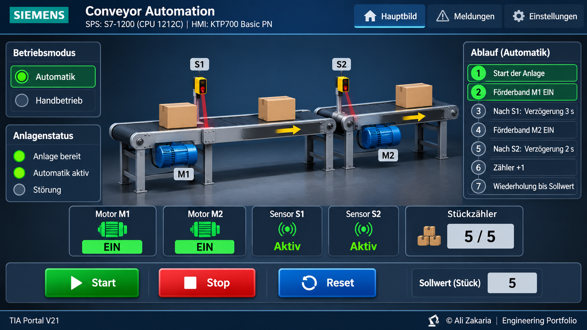

Projekt 01 – Conveyor Automation
SPS-Steuerung einer Förderanlage mit zwei Motoren, Sensoren, Zeitverzögerungen und HMI.
Software: Siemens TIA Portal V21
Projekt ansehenTitelbild: KI-generierte Konzeptdarstellung
SPS | TIA Portal | HMI | MSR | Regelungstechnik
Engineering Portfolio – Ali Zakaria
In diesem Bereich dokumentiere ich meine praktischen Projekte aus der industriellen Automatisierungstechnik.
Schwerpunkte sind SPS-Programmierung, Steuerungstechnik, HMI-Visualisierung sowie Mess-, Steuerungs- und Regelungstechnik.

SPS-Steuerung einer Förderanlage mit zwei Motoren, Sensoren, Zeitverzögerungen und HMI.
Software: Siemens TIA Portal V21
Projekt ansehenTitelbild: KI-generierte Konzeptdarstellung
Weitere Anwendungen aus den Bereichen SPS, HMI und Regelungstechnik folgen.